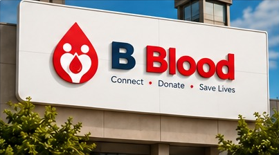

AWARENESS
Understanding the importance of blood donation
Learn why maintaining awareness and encouraging eligible donors are important parts of a more prepared community.
Explore the topicTHE BBlood MEDIA ROOM
Discover the people, ideas, and moments that help spread awareness about blood donation. Every story is a reminder that compassion can bring communities closer together.
Raising awareness. Sharing knowledge. Encouraging generosity.

Awareness begins with sharing.
IN THE SPOTLIGHT
Explore key ideas behind blood donation and the role that informed, caring communities can play.
Learn why maintaining awareness and encouraging eligible donors are important parts of a more prepared community.
Explore the topicCommunity awareness can help more people understand how they may contribute to a culture of giving.
View galleryReliable information helps prospective donors understand the donation process and seek qualified guidance.
Learn moreA CLOSER LOOK
Browse visual highlights related to healthcare, awareness, generosity, and community support.
SPREAD THE WORD
You do not need to be a healthcare professional to help spread awareness. Sharing credible information and encouraging people to consult qualified healthcare providers can help make blood donation easier to understand.
Use trustworthy health resources when discussing donation.
Remind prospective donors to check eligibility with qualified professionals.
Help others find credible local blood donation services.
Sharing knowledge can be the first step towards helping someone.
LET'S CONNECT
Contact BBlood to discuss awareness initiatives, media enquiries, or ideas for helping more people learn about blood donation.